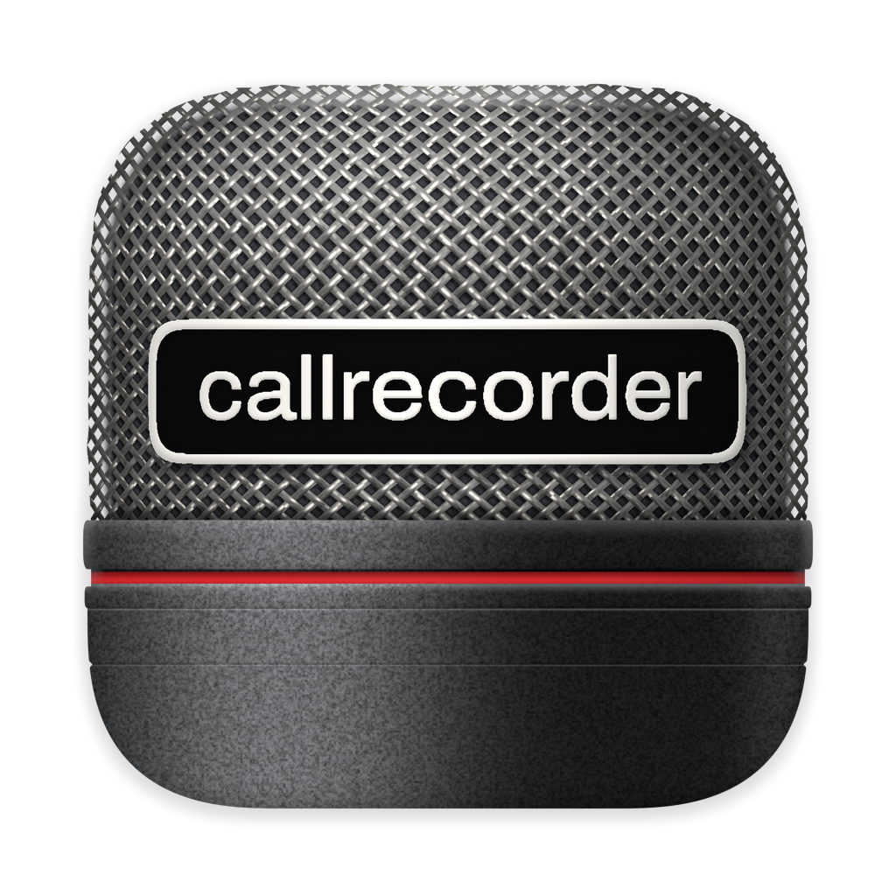

Relecture de graphiste de l'app Mac de Callrecorder, version 0.24.0, le 8 novembre 2026. J'ai regardé les 35 captures de captures-mac-0.24.0/ une à une, à leur taille, et lu dans Sources/CallRecorder ce qu'elles ne montrent pas : barre des menus, pastille volante, notifications, vignettes, mode sombre. Chaque reco est confrontée à DESIGN.md, TEXTES.md, à la marque et à l'historique (git log -S) ; quand elle va contre un choix fait exprès, l'encadré gris le dit, avec le commit.
Le critère : qu'on comprenne ce qu'on voit (sens), qu'un utilisateur de Mac le reconnaisse (familiarité), que ça serve à ce que ça doit faire (fonction). Rien de neuf pour le neuf. Les croquis reprennent les vraies valeurs de l'app (tuiles 48×30 rayon 5, cartes rayon 12, fonds en opacité de primary, Palette) ; à gauche, un recadrage de la vraie capture, à droite la proposition, qui suit le clair et le sombre.
Deux limites. Toutes les captures sont prises fenêtre inactive : les titres sont gris et les interrupteurs allumés se distinguent mal des éteints ; aucune capture en sombre. 7 recos sont des gênes, les autres des détails. Classement : de la plus importante à la moins importante.
Le micro a un contour à lui : le haut de la grille suit la silhouette du micro, fils visibles sur le bord, et ses coins ne sont pas ceux du « squircle » d'Apple. Sur macOS 26, une icône qui ne remplit pas exactement ce gabarit est réduite et posée dans une tuile grise : c'est ce que le Dock montre pour les apps restées au format d'avant.
Pourquoi
Familiarité. L'icône est le premier signe de l'app, dans le Dock, les notifications et la feuille « Autoriser le micro ». Une icône encagée paraît vieille ou mal finie, à côté des icônes d'Apple, et la grille rapetisse d'un tiers.
Proposé
Garder le dessin (grille, bague rouge, socle mat, plaque) mais le faire remplir le squircle : la grille déborde dans les coins, le contour est celui du gabarit, et la matière reste dedans. Le livrer en fichier .icon (Icon Composer) à trois couches (grille, plaque, socle), pour que macOS 26 ajoute de lui-même ses reflets et ses versions sombre et teintée. Les filets bêta et dev changent toujours de couleur. À vérifier d'abord sur un Mac en 26 : c'est la seule reco qui demande un coup d'œil sur l'écran.
Choix déjà fait : Le contour irrégulier est voulu (« le contour n'est pas lisse », marque/README.md ; b94d18c et f0442dc du 2026-11-07). La reco garde la matière et change seulement le bord.
Avant

rendu de macOS 26 pour une icône hors gabarit (simulé)
Proposé
même dessin, plein squircle (rayon 22,4 %)
2. Cinq façons de dessiner la vignette d'une ligne
GêneEffort : heures
Où
Liste des conversations, toutes les captures (lecture.webp, vide.webp) ; KindThumb.swift, CallCard.swift
Vu
Dans une même colonne : une capture avec le logo en pastille (Revue budgétaire), un logo seul sur tuile grise (WhatsApp, Chrome), une feuille Seyès bleu clair (Notes), un téléphone dessiné avec un écran en dégradé violet (Banque Aurore), et une heure en gros pour une réunion. Le même appel « Banque Aurore » prend un combiné vert dans la page Notes et un iPhone violet dans la liste.
Pourquoi
Sens. La vignette doit dire « quel genre de conversation » d'un coup d'œil. Avec cinq dessins, l'œil compare des styles au lieu de comparer des types ; le dégradé violet et la feuille bleue pèsent plus lourd que les captures, qui sont pourtant l'information la plus riche.
Proposé
Une seule grammaire, sur la tuile 48×30 (Thumb.row) : une capture quand il y en a une, avec le logo en pastille (inchangé) ; sinon la tuile neutreThumb.fill et un seul signe centré de 15 pt : le logo de l'app, ou un SF Symbol en .secondary : iphone pour un appel du téléphone, person.2 pour une réunion, note.text pour les notes (celui du titre de la page Notes). Le même signe partout où la conversation apparaît : liste, Notes, recherche, panneau de la barre des menus.
Choix déjà fait : La feuille Seyès et le téléphone dessiné viennent de 0286f57 (2026-10-30, « vignettes sans capture »). L'heure en grand pour une réunion double l'heure déjà écrite sous le titre.
Avant
captures-mac-0.24.0/lecture.webp
Proposé
Notes
22:36 · 4 notes
Revue budgétaire
15:48 · 34 min · Sophie Marchand…
Banque Aurore · chargé d'affaires
11:20 · 6 min · Thomas Girard
Paul Mercier · expert-comptable
14:00 · 9 min · Paul Mercier
Réunion d'équipe
09:30 · 48 min
3. Le bouton des notes, en haut à droite, ne se lit pas
GêneEffort : minutes
Où
Coin haut droit d'une conversation (lecture.webp) ; NotesPile, TranscriptReader.swift:1977
Vu
Une pile de trois feuilles Seyès de 22×16 pt, avec le nombre en 11 pt gras bleu marine imprimé sur la feuille, par-dessus les lignes bleues. À la taille réelle, le chiffre se confond avec la réglure, et la pile ressemble à un tableau.
Pourquoi
Sens et familiarité. Un nombre sur une icône, sur Mac, c'est une pastille (Mail, Messages, le Dock). Ici le chiffre est la seule information, et c'est elle qu'on lit le plus mal. Les couleurs sont fixes : en sombre, la feuille claire fait une tache.
Proposé
Le symbole note.text de la barre (18 pt, comme les autres icônes de barre) et, à côté, le nombre en .caption.weight(.semibold).monospacedDigit() sur une capsule Chip.fill. Sans notes, l'icône seule. Pas de dessin, il suit le clair et le sombre.
« Aucune conversation sélectionnée » : grand titre gras sur deux lignes avec un combiné. « Rien à lire » : même gabarit, une phrase et un bouton. « Pas transcrite » : un bandeau rosé en haut (« Le micro n'a rien enregistré. ») et une phrase grise au milieu (« Rien n'a été enregistré : aucun son n'est arrivé. ») qui dit la même chose.
Pourquoi
Sens. Le combiné annonce « appel » alors que la liste mêle réunions et notes (TEXTES : « Appel, un vrai appel, et rien d'autre »). Le grand titre gras crie pour un état neutre. Le double message de transcrire.webp fait douter : deux textes, donc deux problèmes ?
Proposé
Une seule forme, celle de ContentUnavailableView, et trois réglages : rien de choisi (l'état le plus fréquent, comme Mail : « Aucun message sélectionné ») : le titre seul, sans icône ni description, en .title3 secondaire ; rien d'enregistré : mic.slash, le titre « Rien n'a été enregistré », la cause en description, et pas de bandeau ; audio à la corbeille : inchangé. Le bandeau reste pour ce qui accompagne un contenu, pas pour ce qui le remplace.
Choix déjà fait : Les deux phrases de transcrire.webp viennent de 42d966d (2026-11-06, « ce qui était faux dit maintenant ce que fait l'app ») : la reco garde leur contenu et n'en montre qu'une.
Avant
captures-mac-0.24.0/vide.webp
captures-mac-0.24.0/transcrire.webp
Proposé
Aucune conversation sélectionnée
Rien n'a été enregistréAucun son n'est arrivé du micro.
5. Ce qui manque et ce qui est fait n'ont pas de couleur
Le bandeau « Pour enregistrer vos conversations, autorisez le micro… » est une carte grise, triangle gris : il a l'air d'une ligne de Réglages comme les autres. À l'inverse, « Le micro n'a rien enregistré » a un fond rosé. « ✓ Autorisé » est gris secondaire, comme un état éteint.
Pourquoi
Fonction. Le seul bandeau qui empêche l'app d'enregistrer doit se voir avant le reste. Palette.warning et Palette.success existent pour ça (DESIGN : « Attention », « Fait, prêt ») et ne sont pas employés ici. Réglages Système dit « Autorisé » sans couleur mais montre l'interrupteur allumé ; ici il n'y a que le mot.
Proposé
Bandeau : triangle exclamationmark.triangle.fill en Palette.warning, fond Palette.warning à 0,10 (le même que le bandeau du micro, qui passe de rosé à cette valeur). Le bouton reste « Autoriser », en bouton par défaut (accent). « Autorisé » : la coche checkmark.circle.fill en Palette.success, le mot en secondaire.
Pour enregistrer vos conversations, autorisez le micro et le son des apps.
Micro
Votre voix
Autorisé
6. La carte « Claude relit » : trois indicateurs, une barre grise
GêneEffort : minutes
Où
claudeia.webp, carte sous le lecteur et pastille en bas à droite
Vu
Un sablier (ProgressView en petit) avant le titre, un deuxième dans la pastille « v1 · Transcription », et une barre de progression grise. « · encore 45 s » commence par un point médian collé à rien. La phrase « Il reçoit la transcription et les captures. Sa version s'ouvrira à la place de celle-ci, qui reste. » prend une ligne entière.
Pourquoi
Fonction. DESIGN réserve l'accent à « progression » : une barre grise se lit comme éteinte. Trois indicateurs pour une seule attente, c'est du bruit. La phrase décrit le mécanisme (TEXTES 3) ; la seule conséquence utile est « la transcription actuelle reste ».
Proposé
Une ligne : « Claude relit la transcription » en .callout.weight(.semibold), « encore 45 s » à droite en secondaire .monospacedDigit(), sans point médian ; dessous, la barre en accent, 4 pt, sans sablier. La pastille du bas garde son sablier seulement si la carte est hors de l'écran. Phrase retirée, ou réduite à « Celle-ci reste lisible en attendant. »
Choix déjà fait : La phrase vient de 42d966d (2026-11-06, relecture des textes). La reco propose de la raccourcir, pas de revenir à une version d'avant.
Avant
captures-mac-0.24.0/claudeia.webp
Proposé
Claude relit la transcriptionencore 45 s
7. L'accueil des Réglages : icônes au trait bleues, et « Paramètres » dans « Réglages »
Cinq entrées, chacune avec un symbole au trait en accent : lock.shield, square.stack (qui se lit comme une corbeille à cette taille), dot.radiowaves.left.and.right, link, gearshape. La dernière s'appelle « Paramètres », synonyme de la page qui la contient.
Pourquoi
Familiarité. Réglages Système, Mail et Safari mettent devant chaque catégorie une tuile de couleur 20 pt avec un glyphe blanc : la couleur permet de retrouver une entrée sans lire. « Réglages › Paramètres » ne dit pas ce qu'on y trouve ; la même page d'Apple s'appelle « Général ».
Proposé
Tuiles 22×22, rayon 6, glyphe blanc rempli : Autorisations hand.raised.fill sur bleu, Groupes folder.fill sur orange (le dossier, que tout utilisateur de Mac associe à « ranger »), Couverture antenna.radiowaves.left.and.right sur vert, Intégrations link sur violet, Général gearshape.fill sur gris. « Paramètres » devient « Général ».
Choix déjà fait : Les cinq entrées et leur nom viennent de f4a32e1 (2026-11-02) ; square.stack de 75a4d2b (« chacune dit ce qu'elle fait »). La reco change les icônes et un mot, pas la structure. Glyphes du croquis : des approximations des SF Symbols cités.
Avant
captures-mac-0.24.0/reglages.webp
Proposé
✋
Autorisations
Micro, son des apps et écran
›
▰
Groupes
Perso, Pro
›
📡
Couverture
›
🔗
Intégrations
Rien de relié
›
⚙
Général
Audio gardé 10 jours
203 Mo›
8. « v1 », « v2 » sur la pastille du bas
DétailEffort : minutes
Où
Pastille en bas à droite de chaque conversation (lecture.webp, nouvelle.webp) ; TranscriptReader.swift:658
Vu
La pastille affiche en permanence « v1 · Transcription » puis « v2 · Transcription ». Le numéro est celui du fichier.
Pourquoi
Sens. DESIGN : « Montrer le final […] jamais la liste des versions ». Le numéro est un mot du disque ; la personne veut savoir ce qu'elle lit (une transcription, une relecture par Claude, une version modifiée), pas son rang.
Proposé
La pastille dit la nature : « Transcription », « Relue par Claude », « Modifiée ». Le numéro et la date ne vivent que dans le menu qu'elle ouvre, comme l'historique des versions de Pages, à un geste.
Choix déjà fait : Le menu est dans la page depuis 35b9624 (2026-11-05) ; le libellé « v… · » date de e623f52. La reco change le libellé, pas la place.
Avant
captures-mac-0.24.0/lecture.webp
ProposéRelue par Claude
9. Les boutons du bas : trois ronds séparés, et une icône de presse-papiers pour Copier
DétailEffort : minutes
Où
Bas de chaque conversation (lecture.webp) ; Réglages › Claude, « Copier la consigne » (claude.webp)
Vu
Rechercher, Copier et Partager sont trois cercles de verre posés côte à côte, puis la pastille des versions. L'icône de Copier est clipboard (une planchette), ici et dans les Réglages.
Pourquoi
Familiarité. Sur macOS 26, les boutons d'une barre se groupent dans une même capsule de verre (Finder, Notes, Safari) ; trois ronds isolés font trois objets. Le Mac dit « copier » avec doc.on.doc (Notes, Safari, Xcode) ; la planchette se lit « coller » ou « presse-papiers ».
Proposé
Une capsule de verre (FloatingGlass) avec les trois icônes à 36 pt d'écart, puis la pastille des versions à 8 pt. Copier prend doc.on.doc, partout (barre, Réglages, menus).
Avant
captures-mac-0.24.0/lecture.webp
Proposé
Transcription ⌄
10. Le temps du lecteur : « 00:00 / 34:00 »
DétailEffort : minutes
Où
Lecteur en tête de chaque conversation (lecture.webp) ; AudioPlayer.swift
Vu
Position et durée collées par une barre oblique, avec un zéro de tête pour les minutes (« 00:00 »), avant la forme d'onde.
Pourquoi
Familiarité. Dictaphone, QuickTime et Musique mettent le temps écoulé à gauche de la piste et le temps restant à droite, sans zéro de tête (« 0:00 », « −34:00 »). La lecture de la position devient spatiale, et le texte rétrécit d'un tiers, ce qui rend de la place aux noms des pistes.
Proposé
« 0:00 » à gauche des ondes, « −34:00 » à droite, tous deux .caption.monospacedDigit() secondaires. Les durées d'une heure ou plus : « 1:05:12 ».
Avant
captures-mac-0.24.0/lecture.webp
Proposé
▶0:00−34:00
11. La ligne « En cours » est rouge trois fois
DétailEffort : minutes
Où
Liste, première ligne (vide.webp, enregistrement.webp) ; panneau de droite pendant l'enregistrement
Vu
« 22:55 · ● En cours · 12 min » : l'heure, le point, le mot et la durée sont tous en Palette.live. La durée dit « 12 min » dans la liste et « 12:02 » dans la carte de droite ; la barre des menus dit « 12:02 » aussi.
Pourquoi
Sens. Le rouge est un signal ; étalé sur toute la ligne, il ne pointe plus rien. Deux écritures du même chrono à 400 pt d'écart font croire à deux mesures.
Proposé
Seuls le point et « En cours » en rouge ; « 22:55 » en secondaire comme les autres lignes ; la durée devient le chrono vivant « 12:02 », .monospacedDigit(), en secondaire, la même chaîne que la barre des menus et la pastille.
Avant
captures-mac-0.24.0/vide.webp
Proposé
Point d'avancement · refonte du site
22:55 · ● En cours · 12:02
12. « pas transcrite » : un titre grisé une fois sur trois
Trois lignes disent « pas transcrite ». Une seule a aussi son titre en secondaire (« Appel WhatsApp », sans titre trouvé), les deux autres en noir. Le statut est en minuscule au milieu des métadonnées.
Pourquoi
Sens. Le grisé laisse croire à une ligne désactivée ou à la corbeille, et seulement pour une des trois. TEXTES donne l'exemple de badge « Pas encore transcrite » : un état vrai à cet instant.
Proposé
Titre toujours en .primary. Le statut, dernier élément de la ligne, en secondaire comme le reste : « Pas encore transcrite ». Un titre de remplacement (« Appel WhatsApp ») n'a pas à se distinguer : le logo dit déjà l'app.
Avant
captures-mac-0.24.0/vide.webp
Proposé
Appel WhatsApp
18:07 · 6 min · Pas encore transcrite
Appel fournisseur · hébergement
21:07 · 18 min · Pas encore transcrite
13. Le bas de la liste coupe un en-tête de jour
DétailEffort : minutes
Où
Bas de la colonne (vide.webp, enregistrement.webp : « Lundi 2 novembre » seul au-dessus de « Enregistrer une réunion »)
Vu
La liste défile sous le pied (Enregistrer une réunion, Réglages) sans transition : un en-tête de jour se retrouve seul, sans ligne, collé au pied, comme si ce jour était vide.
Pourquoi
Sens. Un en-tête orphelin ment un instant (« rien ce jour-là »). En haut, la fenêtre a déjà ScrollEdge pour ce qui passe sous la barre ; le pied n'a pas son pendant.
Proposé
Le même effet de bord en bas : .scrollEdgeEffectStyle(.soft, for: .bottom) sur macOS 26, un dégradé de 24 pt vers le fond de la colonne avant. Le contenu finit de s'effacer avant le pied.
Avant
captures-mac-0.24.0/vide.webp
Proposé
Mardi 3 novembre
Rétro sprint 42
21:07 · 41 min
Lundi 2 novembre
◉ Enregistrer une réunion
⚙ Réglages
14. Pendant un enregistrement, un squelette promet un texte qui ne vient pas
DétailEffort : minutes
Où
Panneau de droite d'un appel en cours (enregistrement.webp) ; TranscriptSkeleton
Vu
Sous « ◉ 12:02 Enregistrement en cours », toute la hauteur est remplie de répliques grises vides : le squelette de chargement. Il reste là toute la durée de l'appel.
Pourquoi
Sens. Un squelette veut dire « ça arrive dans une seconde ». Ici rien n'arrive avant la fin de l'appel : l'écran semble bloqué pendant une heure. C'est aussi la forme utilisée pour « Nouvelle transcription en cours » (encours.webp), où elle est juste.
Proposé
Garder le squelette pour la transcription en cours. Pendant l'enregistrement : la carte rouge en tête (inchangée), puis un état vide calme au centre : l'onde des deux pistes en direct (le même dessin que le lecteur, qui avance) et, dessous, « Transcrite à la fin de l'appel » en secondaire. Ce qu'on voit est vrai à l'instant.
Choix déjà fait : Le squelette pendant l'appel est voulu : 1b0f662 (2026-10-28, « appel en cours en squelette »). La reco va contre ce choix ; Gildas tranche.
Avant
captures-mac-0.24.0/enregistrement.webp
Proposé
◉12:02Enregistrement en cours
Transcrite à la fin de l'appel
15. Une page des Réglages, trois noms
DétailEffort : minutes
Où
claude.webp (« Agents »), autres-outils.webp (« Base de données externe »)
Vu
La page légendée « Réglages › Claude » s'appelle « Agents » dans la barre, et son premier groupe « Claude ». La page « Autres outils » s'appelle « Base de données externe » dans la barre, et son seul groupe « Copies », son bouton « Ajouter une copie… ».
Pourquoi
Sens. TEXTES 8 : « Changer de mot fait croire à un autre objet ». On arrive par un mot, on lit un autre en titre : la personne se demande si elle est au bon endroit. « Base de données » est un mot du code.
Proposé
Le titre de la barre reprend exactement le libellé de l'entrée qui y mène. « Agents » partout pour la première ; « Copies » pour la seconde (titre, entrée), le groupe intérieur perd alors son titre, inutile.
Avant
captures-mac-0.24.0/autres-outils.webp
Proposé
‹Copies
Aucune copie
16. Téléphones : le rythme des blocs et des coches qui ne sont pas des réglages
Entre « Ajouter un téléphone » et « Android » : ~90 pt de vide, contre ~40 ailleurs. « Ajouter un téléphone » est rangé sous « iPhone » alors qu'il relie un Android. Le premier texte de la carte iPhone (« Les appels décrochés sur l'iPhone ne sont pas enregistrés ») a la taille d'un label de ligne, sans en être un. « Ce qui est enregistré sur Android » montre des ronds bleus cochés à droite, ni interrupteurs ni cases.
Pourquoi
Familiarité et sens. Sans filets, c'est l'espacement qui groupe (DESIGN) : un écart irrégulier dit « autre sujet » au mauvais endroit. Un rond bleu coché à droite se lit comme une sélection dans une liste, pas comme un réglage : on ne sait pas s'il se décoche.
Proposé
Une seule valeur entre groupes : 24 pt (l'échelle). « Ajouter un téléphone » passe en tête du groupe Android. Le constat iPhone devient le pied du groupe (secondaire), ou disparaît, les étapes suffisant. Les coches deviennent des interrupteurs .toggleStyle(.switch) s'ils se changent, sinon une coche Palette.success sans rond, comme « Autorisé » (reco 5).
Branchez votre Pixel en USB, avec le débogage USB activé
Ce qui est enregistré sur Android
Les appels du réseau mobile
WhatsApp et Signal
17. La consigne pour un autre agent : un chemin en police de texte
DétailEffort : minutes
Où
Réglages › Agents (claude.webp, assistant-36c-…)
Vu
Le chemin de l'app (« /tmp/claude-502/-Users-… /CallRecorder ») est composé dans la police du texte, coupé n'importe où sur trois lignes, au milieu d'une phrase en guillemets. Le titre du groupe « Autre agent (Cursor, Gemini CLI…) » met une liste entre parenthèses.
Pourquoi
Fonction. Ce bloc est fait pour être copié et vérifié. En police proportionnelle, un chemin ne se relit pas (les tirets, les « l » et les « 1 ») ; Terminal, Xcode et les Réglages Système montrent les chemins en chasse fixe.
Proposé
Le chemin, la commande et l'argument en .system(.callout, design: .monospaced), chacun sur sa ligne, dans le champ blanc ; le reste de la consigne reste en texte. Titre du groupe : « Autre agent » ; les exemples passent au pied (« Cursor, Gemini CLI… »).
Avant
captures-mac-0.24.0/claude.webp
Proposé
Ajoute à ta configuration le serveur MCP de Callrecorder. nom calls commande /Applications/CallRecorder.app/Contents/MacOS/CallRecorder argument mcp
18. La visionneuse des captures : trois fois « 15:48 », un fond gris rectangulaire
DétailEffort : minutes
Où
captures.webp ; CaptureViewer.swift:136-262
Vu
Chaque vignette de la bande porte un badge noir « 15:48 », l'heure de début de l'appel, identique pour les trois. La capture en grand est posée sur un rectangle gris (noir à 0,18) qui va jusqu'aux bords. Sous elle, « 00:03 » est souligné comme un lien web.
Pourquoi
Sens. Un badge qui ne change pas d'une vignette à l'autre n'apprend rien ; c'est le moment dans l'appel qui distingue les captures et qui sert à retrouver la réplique. Le fond rectangulaire cadre l'image, ce que le principe des captures écarte (« jamais de cadre rectangulaire, une ombre qui suit le contour »).
Proposé
Badges : « 0:03 », « 0:17 », « 0:46 » (le temps dans l'appel, comme les répliques). Le grand format sur le fond de la fenêtre, avec seulement l'ombre qui suit son contour (elle existe déjà, ligne 262). « 0:03 » en accent sans soulignement, comme l'heure d'une réplique qu'on clique.
Avant
captures-mac-0.24.0/captures.webp
captures-mac-0.24.0/captures.webp
Proposé
0:030:170:46
19. Notes : un bouton « + » flottant à la manière d'Android, quatre ronds bleus
DétailEffort : heures
Où
notes.webp ; NotesPane.swift:400-425
Vu
Un grand « + » (20 pt semi-gras dans un rond de 46) flotte en bas à droite, comme le bouton d'action de Material. Chaque carte commence par un rond bleu plein de lecture : quatre pastilles d'accent dans la page, plus fortes que les citations.
Pourquoi
Familiarité. Sur Mac, créer se fait dans la barre d'outils (Notes : square.and.pencil en haut ; Rappels : « + » en haut) ou par ⌘N. L'accent qui se répète perd sa valeur : c'est le texte de la note qu'on cherche des yeux.
Proposé
« Nouvelle note » dans la barre de la page, square.and.pencil, à côté du filtre ; l'aide garde « fn + D ». Le bouton de lecture devient play.circle en secondaire, et prend l'accent au survol et pendant la lecture.
Choix déjà fait : Le « + » rond vient de 0286f57 (2026-10-30) ; son commentaire le veut « bien rond », bouton principal de la page.
Avant
captures-mac-0.24.0/notes.webp
captures-mac-0.24.0/notes.webp
Proposé
Notes⌯
▷22:28
« Tu peux me sortir le détail par service pour lundi ? »
Revue budgétaire · Moi · 0:33
20. Une citation coupée commence comme une phrase entière
DétailEffort : minutes
Où
notes.webp, troisième carte
Vu
« la masse salariale dépasse de deux points. » : une note tirée du milieu d'une réplique commence par une minuscule, entre guillemets français, sans marque de coupure.
Pourquoi
Sens. En typographie française, un extrait coupé se signale par des points de suspension entre crochets ou, dans une interface, par « … » collé. Sans, la minuscule ressemble à une faute de transcription.
Proposé
Quand le passage ne commence pas au début de la réplique : « … la masse salariale dépasse de deux points. » (espace fine insécable après « et avant », points de suspension en un seul signe). Même chose en fin si la note coupe avant la fin.
Avant
captures-mac-0.24.0/notes.webp
Proposé
« … la masse salariale dépasse de deux points. »
21. Le calendrier marque un jour deux fois
DétailEffort : minutes
Où
calendrier.webp ; DotCalendar.swift:99
Vu
Un jour avec des conversations est en gras et porte un point (deux pour deux conversations) ; les autres sont en secondaire. Les mois descendent : novembre en haut, octobre dessous.
Pourquoi
Familiarité. Calendrier (mois, mini-calendrier) montre les jours en poids normal et met un point sous ceux qui ont un événement. Le double codage rend la grille lourde et les nombres gras se lisent comme « aujourd'hui ». Les mois qui descendent vont à l'inverse de tout calendrier ; ici c'est le sens de la liste, plus récent en haut, et c'est un choix défendable.
Proposé
Poids normal pour tous les jours, couleur .primary pour les jours passés, .tertiary pour les jours à venir ; le point seul dit « il y a quelque chose ». Le jour choisi garde son fond accent.
23. Liste et Calendrier : deux boutons au lieu d'un choix
DétailEffort : minutes
Où
Barre de la fenêtre Conversations (toutes les captures)
Vu
sidebar.left, puis deux icônes séparées, Liste et Calendrier, celle choisie sur un fond Chosen.fill rond.
Pourquoi
Familiarité. Un choix exclusif entre vues, sur Mac, c'est un contrôle segmenté (Finder : icônes / liste / colonnes ; Calendrier : Jour / Semaine / Mois). Deux boutons voisins laissent croire qu'on peut activer les deux, et le premier (barre latérale) se lit comme une troisième vue.
Proposé
Picker en .segmented avec list.bullet et calendar, groupé dans une seule capsule ; le bouton de barre latérale reste seul à gauche, à sa place système.
Choix déjà fait : « Liste/Calendrier en capsule » vient de 1b0f662 (2026-10-28) : la capsule existait, elle a été défaite depuis. La reco y revient, sous la forme système.
Avant
captures-mac-0.24.0/lecture.webp
Proposé
▯☰▦
24. En sombre, la feuille Seyès et le téléphone dessiné gardent leurs couleurs de jour
DétailEffort : minutes
Où
KindThumb.swift:70-102, NotesPile ; aucune capture en sombre dans la série
Vu
Le fond de la feuille est fixé à rgb(0.95, 0.97, 1), les lignes en bleu, la marge en rouge ; le chiffre de la pile en bleu marine fixe ; le téléphone en noir et dégradé violet fixes. Tout le reste de l'app passe par Color.primary en opacité.
Pourquoi
Fonction. En sombre, la vignette des notes devient le point le plus clair de la colonne, et le chiffre bleu marine sur la pile disparaît sur un fond sombre de survol. Aucune capture sombre ne l'a encore montré : c'est à vérifier.
Proposé
Si les recos 2 et 3 passent, ces dessins disparaissent. Sinon : une version sombre (fond white 0.18, lignes à 0,35, marge systemRed à 0,6) et le chiffre en .primary. Ajouter des captures en sombre aux 35 de la série : trois suffisent (liste, conversation, Réglages).
Avant
Notes
simulé : SeyesPaper sur la colonne en sombre
Proposé
Notes
25. Barre des menus et pastille : le chrono au-delà d'une heure, deux rouges, un tiret long
DétailEffort : minutes
Où
App.swift:836-859, App.swift:964, Pastille.swift:75-200 ; non capturé
Vu
Au repos : waveform en gabarit. Pendant un enregistrement : record.circle.fill rouge et le chrono, écrit %d:%02d, donc « 72:05 » après une heure. Le premier item du menu s'écrit « Réunion — 12:03 » avec un tiret cadratin, alors que l'app sépare partout par « · ». La pastille montre un point rouge de 8 pt, le chrono, camera.viewfinder et stop.circle, lui aussi rouge.
Pourquoi
Familiarité et sens. L'horloge et les Réglages Système écrivent « 1:12:05 ». Deux rouges dans 160 pt (le point et Arrêter) se disputent le regard ; sur macOS, Arrêter un enregistrement d'écran est stop.fill, un carré plein, qui ne se confond pas avec « enregistrer ».
Proposé
Chrono « 12:03 », puis « 1:12:05 », partout (barre, pastille, liste, carte). Menu : « Réunion · 12:03 ». Pastille : le point rouge reste le seul rouge ; Arrêter devient stop.fill en .primary, dans le même rond de survol.
Choix déjà fait : Le rouge système de l'icône pendant l'enregistrement est gardé exprès (INCOHERENCES.md, Visuel, « Laissé ») ; la reco ne le touche pas.
Avant
Wi-Fi◉ 72:05sam. 22:55
72:05
Proposé
Wi-Fi◉ 1:12:05sam. 22:55
1:12:05
26. Une notification titrée « CallRecorder » et terminée par une question
DétailEffort : minutes
Où
CallCapture/WeeklyAccess.swift:135 ; non capturé
Vu
Titre « CallRecorder », corps « macOS peut redemander l'accès à l'écran. Vérifier maintenant plutôt qu'en plein appel ? ». macOS affiche déjà le nom de l'app au-dessus du titre ; le nom revient donc deux fois, avec l'ancienne casse.
Pourquoi
Familiarité. Une notification d'Apple porte le fait en titre et l'action en bouton. Le nom de l'app en titre gaspille la seule ligne en gras ; « CallRecorder » est réservé aux noms techniques (marque/README.md).
Proposé
Titre : « Vérifier l'accès à l'écran ». Corps : « macOS peut le redemander en plein appel. » Bouton : « Vérifier ». Les autres notifications (Recorded.swift, PhoneLink.swift) suivent déjà cette forme.
Avant
CALLRECORDER
CallRecorder
macOS peut redemander l'accès à l'écran. Vérifier maintenant plutôt qu'en plein appel ?